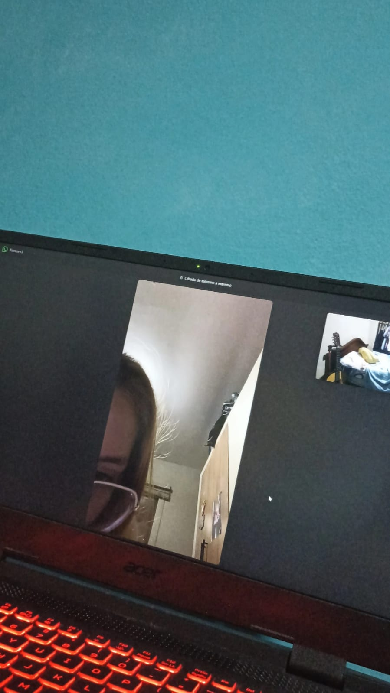
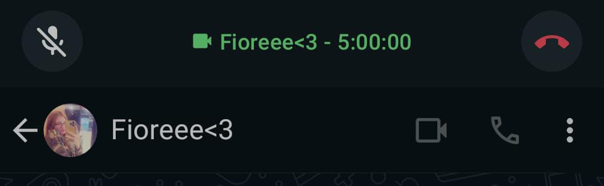

Holi, rubiecita preciosa, empiezo a hacer esto hoy una noche del día 11 de Agosto del
2024, no sé cuando te lo daré, pero es mi plan por si sigo confundido, la verdad no te puedo
sacar
de mi cabeza en estos momentos, te extraño demasiado, eres la única que me puede hacer sentir
algo
porque todas las demás no me causan nada y no son nadie comparadas a ti, eres la única mujer a
la
que amo, la mujer de mis sueños, la indicada.
¿Qué loco no? Nunca pensé hacer esto para la chica hermosa que había visto una sola
vez en persona, y la razón es aún más sorprendente, cuando en el tiempo que no te veía, solo
deseaba
que esa chica me contestará porque me encanta hablar contigo, apesar de todo lo que te puedan
decir
de mí y todo lo que puedan decirte acerca de esto, quiero que sepas y que tengas muy en claro
que
siempre te quisé a ti, y que todo lo que digan los demás que sean malos comentarios, no serán
probablemente verdad, porque realmente, todo lo que te digo y escribo, te lo digo desde mi
corazón,
y nadie ni nada podrá quitarme el amor que tengo por ti, como para dejar que los comentarios de
los
demás influyan en esto.
Te extraño por las noches, han pasado 2 semanas y 6 días de que me dejaste de hablar
cuando estoy haciendo esto, la semana pasada hablamos y la verdad, me sentí tan feliz en ese
momento, pero entiendo lo que te referías con no hacerme daño.
Extraño demasiado tus llamadas, aun que solo fueron dos veces, te lo juro que me encariñe
demasiado
con hacer llamada contigo, y es tan díficil dormir tranquilo cuando en ese momento dormía tan
feliz
y en paz, aun que me levantará con un sueño tremendo y casi muerto por dormir 3 horas, te lo
juro
que era la mejor sensación tener los recuerdos de que habíamos estado hablando toda la
madrugada, y
levantarme y ver que seguiamos en llamada era algo hermoso. De verdad te extraño demasiado,
todos
los días ruego porque vuelvas, eres lo único que quiero ahora porque eres lo que condiciona toda
mi
vida en estos momentos, no sé qué hacer realmente, si irme o quedarme y esperarte; yo te
esperaría
toda la vida, pero, ¿tú me elegirás a mí en algún momento como el privilegiado que pueda hacerte
compañía como tu novio.

